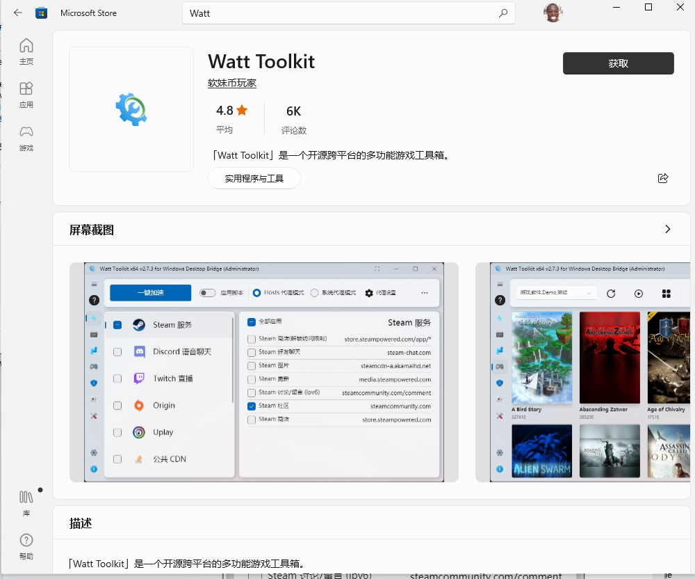
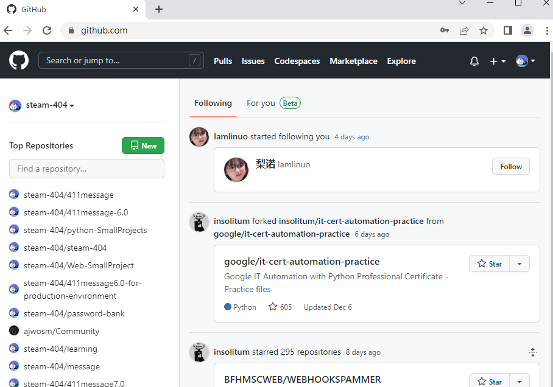
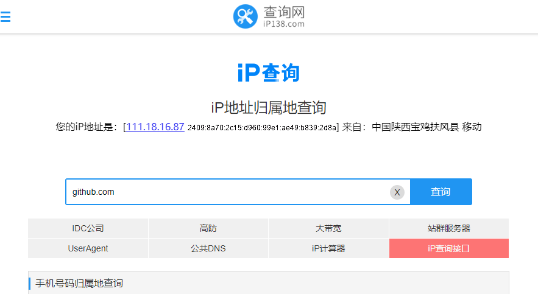
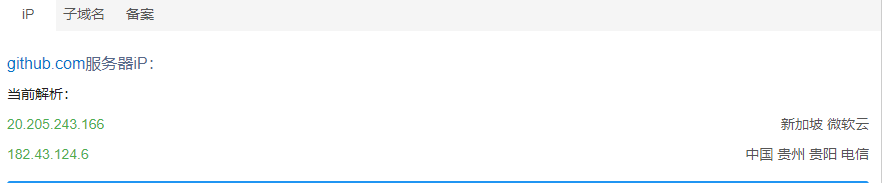
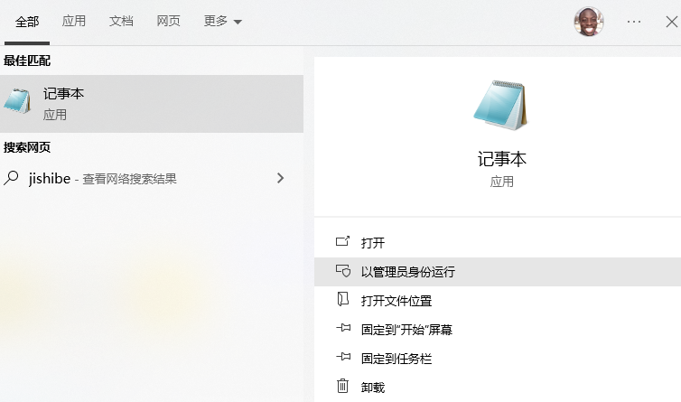
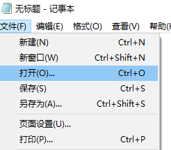
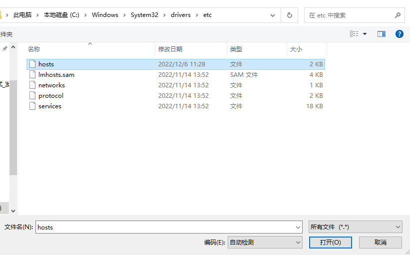
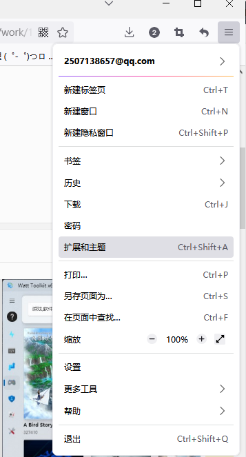

steam++
steam++官网
ps:目前已经上线微软应用商城(Microsoft Store)
搜索Watt Toolkit

打开Watt ToolKit
搜索Github,选择复选框
点击一键加速
此时进入浏览器GitHub就会秒开了

修改host
第一步,随便找一个ip查询工具
ip138查询网
ip地址查询
站长工具
已第一个为例
输入github.com-点击查询

可以看到有两个ip,把它复制下来

以管理员身份打开记事本

选择打开

打开如下路径的 host文件

在末尾添加 ip www.github.com
然后保存，就好了
缺点是ip过一段时间会变,如果不能访问就重复这个操作就行
浏览器插件
以火狐浏览器为例
点击右上角-选择扩展和主题

选择扩展-搜索github加速
点击进入-选择添加
这东西感觉没用
uu加速器
目前UU加速器已经停止github加速服务